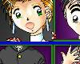
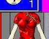
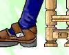
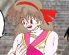

| ART | CREATOR | THUMBNAIL | RECOMMEND | TEXTS BY | |
| #41 | ＭＡＧＩＣ ＢＯＸ その３
■ FEEDBACK |
ことぶきひかる さん (Homepage) |
 |
ことぶき師匠お得意のマジックボックス・ネタ！ 左上の金髪のおねいさんのボディが気になるところ。 | Tarotaさん (00/04/01) |
| #42 | ＭＡＧＩＣ ＢＯＸ ＥＸ
■ FEEDBACK |
ことぶきひかる さん (Homepage) |
 |
ギャラリー史上初の、KISSプログラムを利用した作品です。MAGIC BOX の世界を疑似体験することができます。 | ※現在、ストーリー募集中 (99/03/02) |
| #43 | 呪いの生き人形(笑)
■ FEEDBACK |
Cindy さん |
人形少女化という機軸がいいですね。少年ジャンプの「アウターゾーン」刑事と人形少女編が好きだった人にもオススメでしょう。 | MONDOさん (00/4/3) | |
| #44 | Clone Brother
■ FEEDBACK |
藤崎将軍 さん |
もともと女の子だった妹よりも、事故で女の子になっちゃったおにーさんのほうがギャルっぽいです。兄妹でもあり双子の姉妹でもあるという二人です。 | ※現在、ストーリー募集中 (99/03/23) | |
| #45 | 旅２
■ FEEDBACK |
原田聖也 さん (Homepage) |
ツリ目少女はもう、それだけでなんとはなしに「萌え」ですね！ 彼女の旅はどんなものなのでしょう。…想像力を刺激されます。 | ※現在、ストーリー募集中 (99/4/1) | |
| #46 | シリーズ椅子その５
■ FEEDBACK |
ことぶきひかる さん (Homepage) |
 |
常に新しい方向性を模索しつづけている（と思われる）ことぶき師匠の新たな題材は何と「椅子」でした。椅子に腰掛ける姿勢にはたしかにジェンダーがくっきりと表れるものです。 | ※現在、ストーリー募集中 (00/04/08) |
| #47 | えっ！ マジですか！
■ FEEDBACK |
角さん |  |
神社の階段を男女が転がり落ちると互いの人格が入れ替わってしまうという日本固有の「階段落ち信仰」をイラストにしたものですね。あれって、本当だったんです!! | ※現在、ストーリー募集中 (00/04/08) |
| #48 | 俺の身体っ、返せっ！ 〜ただいま変換中 ２〜 ■ FEEDBACK |
MONDO さん |
「こらっ、いいかげん元に戻せっ」「いいじゃん。もうちょっと貸しといてよこの身体っ」…なんという美しい会話でしょう。入れ替わり物の醍醐味満喫です！ | ※現在、ストーリー募集中 (00/04/10) | |
| #49 | A PLASTIC MAIDEN 〜 可変少女 〜
■ FEEDBACK |
いしがき哲 さん |
インパクトのある変身画像。セーラー服の袖に通された手がガクランの裾を押さえて、ガクランの腕がセーラーの襟をまさぐるという図式が効果的ですね。 | 八重洲二世, 風祭玲さん (00/05/08) | |
| #50 | 月下転生Ｒ
■ FEEDBACK |
角さん |
こ、コワ〜〜!! 思いっきりホラー方面へ突っ走った、迫力のイラストです。ハッ、このシチュエーション…ヤドリバチに似てるぅ!! | 猫野丸太丸さん (00/07/02) | |
| ART | CREATOR | THUMBNAIL | RECOMMEND | TEXTS BY | |